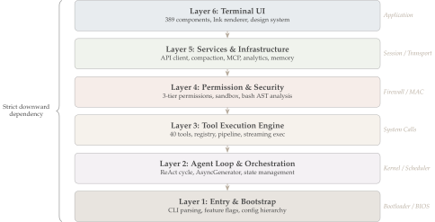
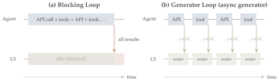
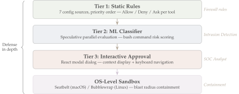
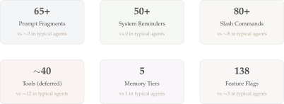
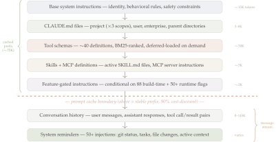

Bird’s Eye Architecture
Architectural overview of Claude Code: a 512K-line React-in-terminal AI agent
1. Background and Scope
Claude Code v2.1.88 shipped with a 59.8 MB source map bundled in the npm package. A source map is a file that maps minified production code back to the original, human-readable source. This accidental inclusion exposed the complete unminified architecture of Anthropic’s production AI coding agent: every module path, function name, and feature flag.
The codebase comprises approximately 512K lines of TypeScript across 1,884 files. It is built with React and Ink (a terminal renderer), orchestrates 40 tools through a three-tier permission system, and uses ML classifiers for shell command safety classification. The scale is comparable to the Linux kernel v1.0.
This series analyzes that architecture across 19 parts organized into nine sections. This opening part provides the architectural overview: it identifies the shared agent engine and traces how the six-layer architecture propagates through every subsystem. Subsequent parts examine each subsystem in detail.
The extraction yields the directory structure shown in the interactive explorer below. Click any folder to expand it and see its contents, LOC count, and which part covers it.
Every directory in the tree above carries a Part N badge linking it to the post that covers it. Below is a brief walkthrough of each top-level src/ subdirectory, grouped by function.
Utility & Platform Layer
utils/(180K LOC, 564 files) — The largest directory at 35% of the codebase. Contains parsers, validators, platform abstraction, and shared helpers consumed by every other module. Sub-areas include prompt fragment utilities (Part III.1), OS-level sandboxing via Seatbelt/Bubblewrap (Part IV.2), configuration loaders (Part V.2), lifecycle hook utilities (Part III.4), and a forked Ink terminal renderer (Part V.1). This directory is typical of mature production systems: visible features sit on deep parsing, validation, and platform abstraction.
Frontend / Terminal UI
The frontend layer totals ~140K LOC (27% of the codebase) — larger than most competing tools in their entirety.
components/(81K LOC, 389 files) — React/Ink components that form the terminal UI. Includes the rootApp.tsx, permission dialogs, streaming markdown output, multi-line input, status bar, and per-tool output renderers. Covered in Part V.1.hooks/(19K LOC, 104 files) — Custom React hooks for state management: input history, API key verification, tool permissions (Part IV.2), and notification delivery (Part III.4). Covered in Part V.1.ink/(20K LOC, 96 files) — A forked copy of the Ink terminal renderer with custom components, DOM abstraction, input event handling, and terminal color utilities. Covered in Part V.1.commands/(26K LOC, 189 files) — Over 80 slash commands (/branch,/advisor,/autofix-pr, etc.) that users invoke during a session. Covered in Part V.1.keybindings/(3K LOC, 14 files) — Keyboard shortcut system for mode cycling, navigation, and custom bindings. Covered in Part V.1.screens/(6K LOC, 3 files) — Top-level screen components:REPL.tsx(main interaction),Doctor.tsx(diagnostics), andResumeConversation.tsx(session resume). Covered in Part V.1.vim/(1.5K LOC, 5 files) — Vim mode with motions, operators, and text objects for terminal input. Covered in Part V.1.buddy/(1.3K LOC, 6 files) — Companion sprite and notification buddy that provides visual feedback during long operations. Covered in Part V.1.state/(1.2K LOC, 6 files) — Global application state via Zustand store. Covered in Part V.1.context/(1K LOC, 9 files) — React context providers for notifications (Part III.4), modals, and overlays. Covered in Part V.1.outputStyles/(98 LOC, 1 file) — Output style loader for customizing rendering format. Covered in Part V.1.moreright/(25 LOC, 1 file) — Horizontal scroll hook for wide output. Covered in Part V.1.
Backend / Agent Engine
The backend totals ~320K LOC (62%), encompassing the agent loop, tool execution, API communication, and prompt assembly.
services/(54K LOC, 130 files) — Backend services split across many concerns: the Claude API adapter (Part II.1), context compaction cascade (Part III.2), MCP server lifecycle (Part VI.1), telemetry (Part IX.1), OAuth flows (Part V.2), memory extraction and team sync (Part III.3), plugin service layer (Part VI.3), agent conversation summaries (Part II.3), auto-documentation (Part VI.2), settings synchronization (Part V.2), and voice I/O (Part VIII.1).tools/(51K LOC, 184 files) — Approximately 40 tool implementations following a uniform Strategy-pattern interface. Includes file I/O tools (Read, Edit, Write, Glob, Grep), the sub-agent spawnerAgentTool(Part II.3), shell execution with sandboxing (Parts 5, 6), MCP proxy (Part VI.1), skill invocation (Part VI.2), and task/notebook/LSP tools. Covered in Part IV.1.cli/(12K LOC, 19 files) — CLI transport layer: argument parsing, exit handling, and terminal printing. Covered in Part V.1.
Agent Orchestration & Context
query/(652 LOC, 4 files) — Query engine configuration and token budget calculations that determine how conversation context is allocated. Covered in Part II.1.tasks/(3.3K LOC, 12 files) — Task execution framework for local agent subprocesses, teammate tasks, remote agents, local shells, and background “dream” summarization tasks. Covered in Part II.3.coordinator/(369 LOC, 1 file) — Coordinator mode for multi-agent orchestration, where a parent agent dispatches subtasks to child agents. Covered in Part II.3.skills/(4K LOC, 20 files) — The SKILL.md loader and registry: discovers, parses, and injects domain-specific expertise into the system prompt. Covered in Part VI.2.schemas/(222 LOC, 1 file) — Hook schema definitions that validate hook configuration files. Covered in Part III.4.plugins/(182 LOC, 2 files) — Plugin discovery and lifecycle management for distributable extension packages. Covered in Part VI.3.
Memory & Context Management
memdir/(1.7K LOC, 8 files) — The CLAUDE.md memory directory system: reads, writes, and indexes persistent memory files that survive across sessions. Covered in Part III.3.assistant/(87 LOC, 1 file) — Session history persistence, allowing conversations to be resumed after disconnection. Covered in Part III.2.
Remote & Native Runtime
bridge/(12.6K LOC, 31 files) — IDE bridge subsystem for VS Code and JetBrains integration: WebSocket transport, message routing, and session handoff. Covered in Part VII.1.remote/(1.1K LOC, 4 files) — Remote session management for cloud-based agent execution. Covered in Part VII.1.server/(358 LOC, 3 files) — Direct-connect server mode enabling IDE clients to connect without the bridge relay. Covered in Part VII.1.upstreamproxy/(740 LOC, 2 files) — HTTP proxy relay for routing API traffic through corporate proxies. Covered in Part VII.1.native-ts/(4K LOC, 4 files) — Native TypeScript modules: color-diff algorithm, tree-sitter file indexing, and Yoga layout bindings. Covered in Part VIII.1.voice/(54 LOC, 1 file) — Voice mode feature flag that enables speech input/output. Covered in Part VIII.1.
Configuration & Entry Points
entrypoints/(4K LOC, 8 files) — Application entry points for CLI (cli.tsx), MCP server (mcp.ts), initialization (init.ts), and the SDK (sdk/, Part II.2). Covered in Part I.2.constants/(2.6K LOC, 21 files) — Feature flags, model lists, API rate limits, and beta flags (Part IX.1). Covered in Part V.2.migrations/(603 LOC, 11 files) — Settings migration scripts that upgrade configuration across Claude Code versions. Covered in Part V.2.bootstrap/(1.8K LOC, 1 file) — Application bootstrap state that initializes the runtime environment. Covered in Part I.2.types/(3.4K LOC, 11 files) — Shared TypeScript type definitions used across the codebase. Covered in Part II.1.
Top-Level Root Files
main.tsx— Application root that wires together entrypoints and React rendering (Part I.2).QueryEngine.ts,query.ts— The query engine class and orchestration logic (Part II.1).Tool.ts,tools.ts— Tool base class and registry (Part IV.1).Task.ts— Task base class for agent subprocess management (Part II.3).commands.ts— Command registry for slash commands (Part V.1).context.ts— Context type definitions for prompt assembly (Part III.1).cost-tracker.ts— Token cost tracking and reporting (Part IX.1).setup.ts— Setup and initialization logic (Part I.2).ink.ts— Ink renderer setup (Part V.1).
Vendor Directory
vendor/(438 LOC, 4 files) — Four vendored N-API native modules written in C/C++ and Rust:audio-capture-src/(cross-platform audio, 151 LOC),image-processor-src/(Sharp-compatible image processing, 162 LOC),modifiers-napi-src/(macOS keyboard modifier detection, 67 LOC), andurl-handler-src/(macOS Apple Events URL handler, 58 LOC). These are compiled to platform-specific binaries and accessed through TypeScript wrappers insrc/native-ts/. Covered in Part VIII.1.
3. The Six-Layer Architecture
Claude Code’s architecture stacks six layers with strict downward dependency — each layer depends only on those below it, the same principle used in operating system kernels and network protocol stacks.
This layered design is important because it makes the system modular: the tool execution engine can be tested without the UI, the permission system can be tested without the API, and new tools can be added without touching the agent loop. The invariant holds consistently across 512K lines.

The subsections below trace each layer from bottom to top. The layer numbering is analytical, not literal: the source code does not name these layers, but the dependency structure is visible in import graphs.
Layer 1: Entry & Bootstrap
Before the agent can do anything, it must authenticate the user, load configuration, detect the platform, and select an entry mode — all within ~150ms. src/main.tsx is the single entry point. It runs I/O-bound initialization steps in parallel (configuration reads, credential prefetches, profiling checkpoints) to keep startup fast. Configuration follows a strict priority hierarchy: environment variables > local .claude/settings.json > project CLAUDE.md > user settings > defaults. This hierarchy lets enterprise admins override local preferences (e.g., forcing sandbox mode) without modifying user config.
The bootstrap also resolves which entry mode to launch: interactive REPL (the default claude command), one-shot SDK execution (claude -p "task"), or MCP server mode (claude mcp). Each mode shares the same agent engine but wires different I/O adapters. See Part I.2 and Part V.2.
Layer 2: Agent Loop – The Kernel
The heart of the system. The agent loop implements the ReAct (Reason + Act) pattern — a cycle where the model alternates between reasoning about what to do and acting through tools.
The core implementation lives in two files:
src/query.ts— ThequeryLoop()function (line 241) is the innerwhile(true)loop. On each iteration it calls the Claude API, checks whether the response containstool_useblocks (line 829), executes any requested tools sequentially, and decides whether to continue (needsFollowUp = true, line 834) or exit (if (!needsFollowUp), line 1062).src/QueryEngine.ts— ThesubmitMessage()method (line 209) wrapsqueryLoop()as an asynchronous generator, yielding each event to the caller as it is produced.
The generator-based design is the key architectural choice. The figure below compares two approaches: a blocking loop that runs to completion before returning all results at once, versus the generator pattern that yields each event as it is produced.

In the blocking model (a), the agent runs to completion — calling the API, executing tools, calling the API again — and the UI is idle until all results arrive in a single batch. In the generator model (b), the agent yields each event (a model token, a tool result, an error) as it is produced. The UI renders incrementally in real time: the user sees tokens streaming as the model generates them, and tool output appearing as tools complete. This is the producer-consumer pattern — the agent produces events; the UI consumes and renders them; the generator protocol provides natural flow control (backpressure) without explicit buffer management.
The same generator also enables the three entry modes discussed above: the CLI subscribes and renders to the terminal, the SDK subscribes and emits structured JSON, and the bridge subscribes and forwards over WebSocket — all consuming the same event stream.
Layer 3: Tool Execution – The System Call Interface
An LLM can only generate text. To become an agent, it needs a bridge between reasoning (“I should check this file”) and action (actually reading the file). Claude Code implements ~40 such bridges — called tools — behind a uniform interface (defined in src/Tool.ts, line 362): every tool has a name for dispatch, an inputSchema (JSON Schema) that the model must satisfy, and an execute() function that performs the action. The agent loop dispatches by name and validates against the schema, so adding a new tool requires no changes to the loop.
The tools span six categories:
| Category | Examples | Purpose |
|---|---|---|
| File I/O | Read, Edit, Write, Glob, Grep | Navigate and modify codebases |
| Execution | BashTool (12K LOC), NotebookEdit | Run commands, scripts, notebooks |
| Agent | AgentTool, SendMessage | Spawn sub-agents, inter-agent communication |
| External | WebFetch, WebSearch, MCPTool | Access the internet and MCP servers |
| Knowledge | LSPTool, SkillTool, TodoWrite | Language servers, skills, task tracking |
| Meta | TaskCreate, ToolSearch | Manage the agent’s own workflow |
Key design choice: sequential execution. The runToolsSerially() function in src/services/tools/toolOrchestration.ts (line 118) processes tool calls one at a time. When the model edits a file and then reads it, the read must see the edit. Parallel execution would introduce race conditions that cascade into wasted tokens and broken trust. The sole exception is streaming tool execution, which overlaps network I/O with computation.
Deferred loading keeps context cost low: not all 40 tool schemas are sent to the model at once. The system uses BM25 relevance ranking to load only the schemas likely needed for the current task, functioning as a form of virtual memory for tool definitions — schemas are “paged in” on demand rather than resident at all times, saving thousands of tokens per turn. See Part IV.1.
Layer 4: Permission & Security – Defense in Depth
An AI agent that can run rm -rf /, commit to main, or curl sensitive data to an external server is inherently dangerous. Unlike traditional software where the developer controls all actions, here the model decides what to execute — and the model can be wrong, hallucinate, or be manipulated via prompt injection. Claude Code addresses this with four layers of defense:

As a concrete example: when the model requests BashTool with the command git push --force origin main, the system first checks static rules (Tier 1: is force-push allowed in this project’s config?). In parallel, the ML classifier (Tier 2) parses the command into an AST via tree-sitter and scores its risk. If either tier flags the command, the interactive approval dialog (Tier 3) presents the full command with context to the user. Even if the user approves, the OS sandbox (Seatbelt on macOS, Bubblewrap on Linux) constrains the blast radius — the process cannot access files outside the project directory.
src/tools/BashTool/ alone is 12,411 lines — more code than many entire CLI tools. The three-tier permission check is implemented in src/utils/permissions/permissions.ts (hasPermissionsToUseTool(), line 473). See Part IV.2.
Layer 5: Services – The Infrastructure
The agent loop (Layer 2) and tools (Layer 3) both depend on shared infrastructure: API communication, context window management, memory persistence, telemetry, and extension protocols. The services layer (src/services/, 54K LOC) centralizes these into five subsystems:
API Client (
src/services/api/claude.ts, 3,419 lines) — Manages the streaming connection to the Claude API. Handles prompt caching (reusing cached prefixes to reduce cost and latency by up to 90%), automatic model fallback (if one model is overloaded, switch to another), retry logic with exponential backoff, and server-sent event (SSE) parsing. See Part II.1.Context Compaction (
src/services/compact/) — The most architecturally interesting service. A 200K-token context window sounds large, but a busy coding session generates 400K+ tokens in two hours. The compaction system applies progressively aggressive summarization:autoCompactIfNeeded()triggers at ~75% capacity,microcompactMessages()preserves the prompt cache prefix, and reactive compact fires when the API returns a “prompt too long” error. This is directly analogous to cache eviction — multiple policies with different quality/latency trade-offs, triggered by memory pressure. See Part III.2.Memory Hierarchy (
src/services/SessionMemory/,src/services/extractMemories/,src/services/teamMemorySync/,src/memdir/) — Five tiers of persistent memory: project-levelCLAUDE.mdfiles, session memory that survives restarts, auto-extracted memories from conversations, background “dream” consolidation, and team-shared memory. See Part III.3.MCP Server Management (
src/services/mcp/) — Discovers, launches, and manages Model Context Protocol servers that extend the agent with external tools. Each MCP server runs as a separate process with its own lifecycle. See Part VI.1.Telemetry & Analytics (
src/services/analytics/) — Segment + Datadog telemetry that tracks token usage, tool call patterns, error rates, and session metrics. This data feeds back into Claude Code’s development — understanding how real users interact with the agent informs which tools to optimize and where safety checks are too aggressive or too lenient. See Part IX.1.
Layer 6: Terminal UI – The Application Layer
The agent produces a stream of events — model tokens, tool calls, tool results, errors, permission requests — and the user needs to see them in real time, approve or deny actions, provide input, and monitor progress. Claude Code builds a full interactive UI with 389 components (src/components/), 104 custom state management hooks (src/hooks/), and a forked terminal rendering engine (src/ink/, 20K LOC). Key capabilities:
- Streaming markdown — Model output renders as formatted markdown (syntax highlighting, headers, lists) token by token, in real time.
- Permission dialogs — When the agent requests a dangerous action, a modal dialog shows the full command, its risk level, and the relevant context. The user approves or denies with keyboard shortcuts.
- Slash commands — Over 80 commands (
/compact,/branch,/advisor, etc.) that users invoke during a session to control the agent, manage context, or trigger workflows. - Double buffering — The screen renderer writes to an off-screen buffer, computes the diff against the current display, and only updates changed characters — preventing flickering during rapid output.
- Vim mode — Full vim-style input with motions, operators, and text objects for users who prefer modal editing.
The full terminal UI architecture — component hierarchy, rendering pipeline, slash command system, and keyboard navigation — is covered in Part V.1: CLI, Commands & UI.
4. What Differentiates Claude Code
Most AI coding agents share a common skeleton: an LLM, a dozen tools, and a REPL. What distinguishes Claude Code is the depth of investment across every axis — not just more tools, but an entire middleware pipeline assembling 65+ prompt fragments; not just a system prompt, but 50+ adaptive notifications injecting real-time state every turn; not just basic commands, but 80+ slash commands organized into a taxonomy that rivals a full IDE.

Three of these subsystems are qualitatively — not just quantitatively — different from any published competitor. The sections below examine each one, followed by the cross-cutting themes (context management, memory, feature flags) that amplify them.
Prompt Assembly: A 65-Fragment Middleware Pipeline
Before the model sees a single user token, a middleware pipeline assembles 65+ fragments into the context window. These fragments are ordered so that the first ~55K tokens form a stable prefix that qualifies for Anthropic’s prompt caching (up to 90% cost reduction on cache hits). Every fragment added, removed, or reordered can invalidate the cache — so the pipeline’s ordering is a load-bearing architectural constraint, not a convenience.

System Reminders: Real-Time Notification Architecture
Most agents are blind between turns — they know what the user said and what they’ve done, but nothing about the environment changing around them. Claude Code injects 50+ system reminders after each user message, carrying volatile state (git status, file changes, task progress, permission decisions) to the model without disturbing the cached prompt prefix. This is the notification system that keeps the agent aware of its environment.

The reminder categories include environment state (git branch, uncommitted changes, working directory), task tracking (in-progress steps, pending actions), tool feedback (recent results, permission decisions), user preferences (active mode, output style), and context hints (recently viewed files, conversation summaries).
The Command Surface: 80+ Slash Commands
Where most agents offer 5–10 commands for basic session control, Claude Code exposes 80+ slash commands spanning eight categories — a command surface closer to an IDE than a chatbot.
| Category | Examples | Purpose |
|---|---|---|
| Context | /compact, /add-dir, /memory |
Manage the context window |
| Agent | /agents, /advisor, /autofix-pr |
Dispatch agent workflows |
| Mode | /plan, /fast, /vim, /diff |
Cycle interaction modes |
| Session | /resume, /clear, /save |
Control session lifecycle |
| Git | /branch, /commit, /pr |
Direct git integration |
| Extension | /mcp, /skills, /plugin |
Manage extensions |
| Config | /settings, /model, /permissions |
Configure behavior |
| Diagnostics | /help, /doctor, /cost |
Inspect agent state |
The implementation spans 26K LOC across 189 files in src/commands/. Each command registers through a uniform interface — the same Strategy pattern used for tools — enabling consistent discovery, tab completion, and help text. See Part V.1: CLI, Commands & UI for the full command system architecture.
Context as a Managed Resource
A 200K-token context window sounds large until you watch it fill up. A single large source file consumes 8K–12K tokens. A grep across a monorepo returns 30K tokens. Two hours of active coding generates 400K+ tokens of raw conversation — double the window. Claude Code treats context like RAM in an operating system: a scarce resource that requires explicit management.
The constraint is always:
\[|S_{\text{system}}| + |H_{\text{history}}| + |T_{\text{tools}}| + |R_{\text{reminders}}| \;\leq\; W\]
where \(W = 200\text{K}\) tokens. Four subsystems collaborate to satisfy this constraint:
Prompt Assembly (Part III.1) — A middleware pipeline that constructs the system prompt from 12+ sources: base instructions,
CLAUDE.mdproject files, active skills, tool schemas, and cached fragments. The pipeline is ordered so that the first ~15K tokens form a stable prefix that qualifies for prompt caching (up to 90% cost reduction on cache hits).Context Compaction (Part III.2) — When conversation history approaches the budget limit, progressively aggressive summarization kicks in: auto-compact at ~75% capacity, micro-compact that preserves the cache prefix, and reactive compact on API errors. This is directly analogous to cache eviction policies — multiple strategies with different quality/latency trade-offs, triggered by memory pressure.
System Reminders (Part III.4) — 50+ adaptive mid-conversation injections that carry volatile state (git status, file changes, task progress, user preferences) to the model without disturbing the cached prompt prefix. Reminders are appended after user messages, so they don’t invalidate the cache but still reach the model’s attention. This is the mechanism by which the agent stays aware of its environment between turns.
Deferred Tool Loading (Part IV.1) — Not all ~40 tool schemas are sent to the model at once. The system uses BM25 relevance ranking to load only the schemas likely needed for the current task — virtual memory for tool definitions, paging schemas in on demand rather than keeping them all resident.
Together, these four subsystems implement what could be called an operating system for context: allocation, eviction, caching, and demand paging — all applied to the token budget rather than bytes of RAM.
Memory That Outlives Sessions
Most agents are stateless — they forget everything when the session ends. Claude Code implements a five-tier memory hierarchy that persists knowledge across sessions, projects, and even teams:
| Tier | Scope | Mechanism |
|---|---|---|
| Project memory | Per-repo | CLAUDE.md files checked into the codebase |
| Session memory | Per-conversation | SQLite-backed conversation history |
| Extracted memory | Cross-session | Auto-extraction of user preferences and project facts |
| Dream consolidation | Background | Offline summarization of past sessions (named after neuroscience’s sleep consolidation) |
| Team sync | Cross-user | Shared memory across team members via teamMemorySync |
The agent carries forward learned project knowledge, coding preferences, and team conventions. When a user says “remember to always use pytest, not unittest,” that preference is extracted, stored, and injected into future sessions. See Part III.3.
Feature Flags as Partial Evaluation
The shipped binary is not a single program — it is a family of programs, selected by 88 compile-time flags and 50+ runtime gates. This two-tier system controls which features exist in the binary and which are active for a given user.
Compile-time flags are resolved by the Bun bundler during build. When a flag evaluates to false, the bundler eliminates the entire conditional block — including all imports, string literals, and side effects — from the bundle. This is partial evaluation: resolving parameters at compile time to specialize a general program into a specific one, the same principle as #ifdef in C or template specialization in C++. The result is that unreleased features are not just disabled — they are absent from the binary, invisible to reverse engineering. The most heavily gated build-time features are:
| Flag | References | What It Gates |
|---|---|---|
KAIROS |
~154 | Background asynchronous agent work (touches agent loop, UI, session, SDK) |
TRANSCRIPT_CLASSIFIER |
~107 | ML-based automatic mode selection |
TEAMMATE |
~51 | Team memory synchronization |
VOICE_MODE |
~46 | Speech-to-text streaming input |
PROACTIVE |
~37 | Agent suggests actions unprompted |
COORDINATOR_MODE |
~32 | Multi-agent swarm orchestration |
A flag like KAIROS with 154 code references represents an entire subsystem — background agent execution — threaded through the agent loop, UI rendering, session management, and SDK. It can be independently compiled in, tested, and rolled back by flipping a single build flag.
Runtime flags add a second layer. On startup, Claude Code fetches flag values from GrowthBook (cdn.growthbook.io), a remote feature-flag service. These flags enable gradual rollout (5% → 25% → 100%), per-organization targeting, and A/B testing — all without shipping a new binary. The flag API is accessed through a deliberately verbose function: getFeatureValue_CACHED_MAY_BE_STALE(), whose name warns callers that the value is cached locally and may be minutes behind the server. This trades strict consistency for low latency — the agent never blocks on a network call to check a flag.
Runtime flags control agent behavior at a granular level: tengu_ultrathink enables extended reasoning, tengu_tight_weave changes subagent response format, and tengu_disable_bypass_permissions_mode can remotely disable unrestricted execution mode. Obscured codenames like tengu_marble_anvil and tengu_cobalt_lantern suggest active A/B experiments. In total, 757 distinct tengu_* event and flag names define the remote control surface.
A feature can live behind both tiers simultaneously: the build-time flag ensures the code is present in the binary, while the runtime flag controls rollout among users who have it. This layered gating enables safe experimentation with major features (voice input, coordinator mode, background agents) without risking core product stability. See Part V.2 and Part IX.1.
5. Series Roadmap
Each subsequent part dives into a specific subsystem, connecting its design back to the foundations established here.
| Section | Part | Title | Core Insight |
|---|---|---|---|
| I. Overview | I.1 | Bird’s Eye Architecture (this part) | Shared engine, six layers, context engineering |
| I.2 | End-to-End Workflow | Tracing a prompt from keystroke to rendered response | |
| II. Agent Harness | II.1 | Agent Loop & Query Engine | The async generator is the key abstraction |
| II.2 | Agent SDK & Structured I/O | Headless programmatic interface over the same engine | |
| II.3 | Multi-Agent Orchestration | fork() for AI agents | |
| III. Context | III.1 | Prompt Assembly | Middleware pipeline assembles context before the model sees it |
| III.2 | Context Compaction | Cache eviction policies for conversation history | |
| III.3 | Memory Hierarchy | Five-tier memory that outlives sessions | |
| III.4 | Hooks & Lifecycle | Event-driven extension and system reminders | |
| IV. Tools | IV.1 | Tool System & Registry | Uniform interface at scale — the agent’s “hands” |
| IV.2 | Safety & Sandbox | Defense in depth for AI agents | |
| V. Invocation | V.1 | CLI, Commands & UI | Desktop-class UI rendered to TTY |
| V.2 | Auth, Providers & Flags | OAuth for terminal apps and 88 build-time flags | |
| VI. Extensions | VI.1 | Model Context Protocol | The LSP of AI agents — universal tool protocol |
| VI.2 | Skills System | Expertise injection, not capability extension | |
| VI.3 | Plugin Architecture | Extension points composed into a plugin platform | |
| VII. Remote | VII.1 | Remote Runtime & Bridge | IDE integration over WebSocket |
| VIII. Native | VIII.1 | Native Runtime & Vendor | N-API modules, voice, cross-platform |
| IX. Transparency | IX.1 | Hidden Costs & Telemetry | What the agent reports back to Anthropic |
Next up: Part I.2 — End-to-End Workflow, tracing a single prompt from keystroke through the full pipeline to a rendered response.
This analysis is based on the Claude Code v2.1.88 source map, extracted and studied for educational purposes. All code snippets are reconstructed from the source map and may differ from the actual implementation. Claude Code is a product of Anthropic, PBC.